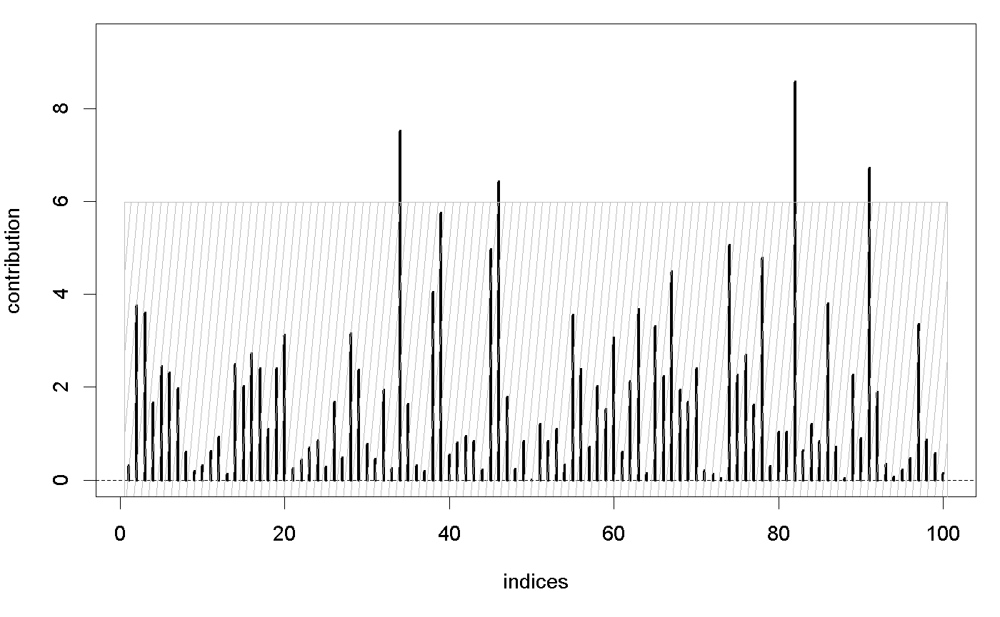

This function plots the individual contributions
to the test statistic.
It is called by the function proprius.
intern.plot(u, upper = NULL, xlab = "indices")
| u | influence:
numeric vector of length |
|---|---|
| upper | critical values:
numeric vector of length |
| xlab | label of horizontal axis: character string |
The function plots the arguments.
A Rauschenberger, MA Jonker, MA van de Wiel, and RX Menezes (2016). "Testing for association between RNA-Seq and high-dimensional data", BMC Bioinformatics. 17:118. html pdf (open access)
This is an internal function. The user functions
are cursus, omnibus,
and proprius.
# simulate influences set.seed(1) u <- rchisq(n=100,df=2) # influence plot upper <- rep(qchisq(p=0.95,df=2),times=100) intern.plot(u,upper)